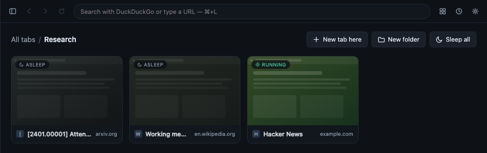

Raha
A calm browser where you decide which tabs get your memory and CPU.
It runs only as many tabs as you allow. The rest sleep and give their memory back.
Version 0.3.3. Free and open source. No account, no telemetry.
Raha (رها) is Persian for “free” or “released”.
This guess comes from your browser and can be wrong. All downloads are below.

How it works
Set a cap
Choose how many tabs may run at once; the default is six. The rest sleep: Raha stops them, and their memory goes back to your computer. Each sleeping tab keeps its place, title, thumbnail and history. Click one and it loads again.
See and limit memory
Give *.slack.com 800 MB, and a Slack tab sleeps when it goes over. The live bar at the bottom shows the memory and CPU each running tab uses, as your system reports it.
Keep tabs running
A pinned tab stays running. So does a tab playing sound, by default, and any site you write a rule for.
The details page covers how tabs sleep, privacy and security, known issues, and the keyboard shortcuts.
Download
The current version is v0.3.3, released 11 November 2026, for macOS, Windows and Linux. It fixes privacy issues found in 0.3.1 (advisory) and has known issues.
for this machine
macOS 13 or later
To check which Mac you have, open the Apple menu and choose About This Mac. “Chip Apple M…” means Apple Silicon; “Processor Intel…” means Intel. The wrong file will not open, and macOS says it “needs to be updated”. macOS also warns that it cannot check the app (what to do).
for this machine
Windows
The installer is not signed, so SmartScreen may stop it. Click More info → Run anyway.
for this machine
Linux
For the AppImage, run chmod +x Raha-*.AppImage, then open it. For the .deb, run sudo apt install ./raha-*.deb.
All files are on the GitHub release page, which shows a SHA-256 checksum next to each.
# or run the code from source (Node 22 or later)
git clone https://github.com/Magronox/raha-browser
cd raha-browser
npm install
npm startVersion 1.0
Version 1.0 is being finished and has no date. It has a new design and further fixes. It will be free to use, and its licence terms will be published with it. Versions up to 0.3.3 stay GPL-3.0.